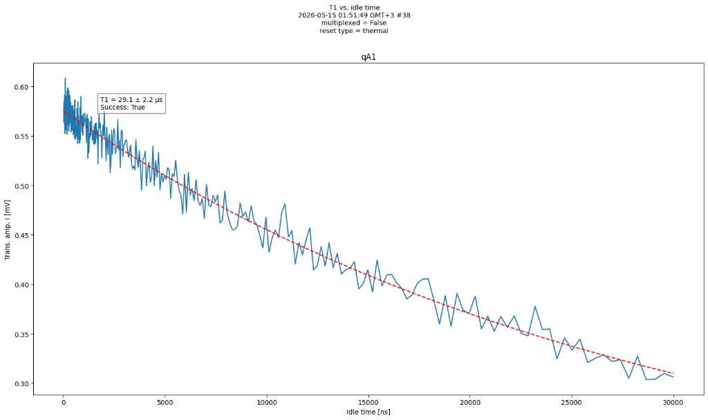
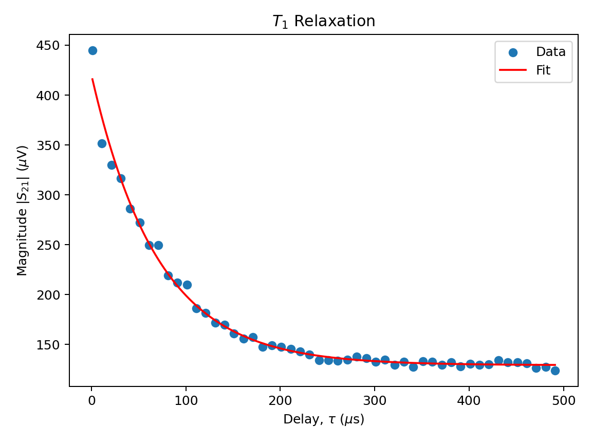
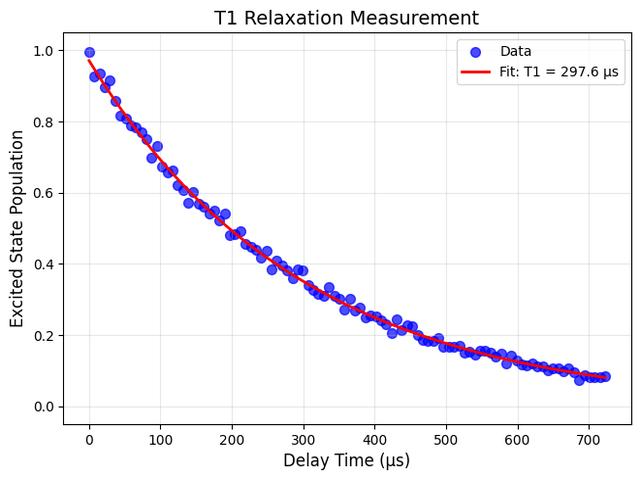
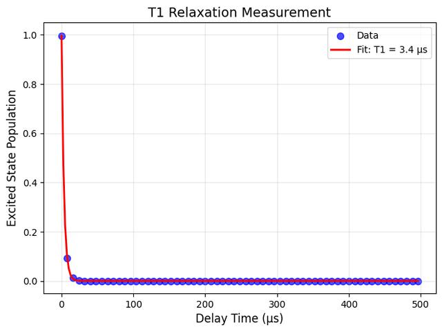

T₁ Energy Lifetime
Leave a qubit in |1⟩ and it will not stay there — it relaxes back down to |0⟩ on its own. T1 is the timescale of that relaxation, and this experiment is how you measure it: excite the qubit with an X gate, wait a delay τ, then measure. Repeat that over many shots and many delays, and the decay you fit gives you the T1 of that physical qubit.
What you'll learn
- Explain T1 decay: why a qubit in |1⟩ returns to |0⟩, and what the timescale T1 is.
- Read a fitted exponential: get T1 from a P(|1⟩) vs. delay plot — why you need several delays, and what 37% ≈ 1/e marks on the curve.
- Treat T1 as a snapshot: the same qubit can fit to a different value on a later day, so the measurement is repeated.
- Pick a qubit from T1: given T1 values and a circuit duration, choose which physical qubit can hold the job.
Instructions
- Select a qubit on the device layout. Every qubit has its own T1, so the value you fit here belongs to the one you picked.
- Press Apply X to flip that qubit from |0⟩ to |1⟩ (a π-pulse).
- Choose a delay τ — how long you leave the qubit alone in |1⟩ after the X pulse, before you measure it. In the lab this delay is stepped across many values; here you pick one delay to inspect.
- Press Sample. That repeats the excite–delay–measure cycle 100 times. Each shot comes back 1 or 0, and their average becomes one point on the plot. A real T1 experiment sweeps dozens of delays; three is only the fewest this widget needs before it can fit a curve, and every extra point sharpens the result.
- Once you have a fitted T1, press Advance one day to jump the simulated device forward. A day of hardware drift has passed, so your fit is out of date and the qubit has to be measured again.
- Then look at the real lab traces and decide which qubit you would send a 50 µs circuit to.
Tab reaches the chip qubits, Advance one day, Apply X, delay slider, Sample, Bloch sphere, Reset, and lab radios. Arrow keys move between qubits on the chip, change the focused slider, and rotate the Bloch view. Enter / Space activate buttons and qubits. ESC resets.
What this calibration step is for
The T1 experiment asks: after I put the qubit in |1⟩, how long does that excitation last? The sequence is simple — start in |0⟩, apply X, wait a delay τ, measure — and you repeat it many times at many delays to fit P(|1⟩) = e−τ/T1.
T1 is not a fixed number printed on the chip. Every physical qubit has its own T1, and each of those values moves over hours and days as the qubit's surroundings change — temperature, stray magnetic fields, and microscopic defects in the materials that drift in and out of resonance with the qubit. The same qubit can fit to 80 µs this morning and 60 µs tonight, which is why labs re-run this experiment regularly and work from the most recent measurement rather than a number from last month.
That measured T1 then matters when you decide which physical qubit to run on. A circuit that occupies a qubit for longer than that qubit's T1 will not keep the excitation it started with.
T1 is one of several numbers that go into picking which qubit to use, alongside T2 and T2*, readout error, and two-qubit gate error. Here you are looking at how long the excited state lasts, by itself.
Run the experiment
- 1 Select qubit
- 2 Excite to |1⟩
- 3 Choose delay
- 4 Sample
Device layout Day 1
Start hereNo qubit selected. Click a node to begin.
Available once you have fitted T1 on a qubit. Jumps this simulated device forward one day: every qubit's T1 has shifted overnight and has to be measured again.
Pulse sequence
You are hereSelect a qubit first. Then apply X to excite it.
This is one delay τ in the T1 experiment.
- Waiting out the delay τ before readout…
- Measuring 100 shots. Each one comes back 1 or 0; their average is the point.
- Choose a new delay time and sample again.
0 of 3 usable delays
Primary visualization
Bloch sphere
About this view
The arrow starts at |0⟩. Apply X flips it to |1⟩. During the delay it stays on the vertical axis and shortens: that shortening is the average over many shots, not one qubit visibly sliding. At P(|1⟩) = 0.5 the arrow vanishes at the centre; then it grows again toward |0⟩.
P(|1⟩) versus delay τ
About this plot
Each Sample fires 100 shots. A shot can only come back 1 or 0, which is why they pile up along the top and bottom of the plot; their fraction is the big gold point — the sampled P(|1⟩). Because 100 shots is a finite number, that sampled average lands near the true curve but rarely exactly on it.
Collect points at three different delays and an exponential P(|1⟩) = e−τ/T1 is fitted through them, which is how T1 is actually determined. Three points is the bare minimum and the fitted value will be off by several percent; add more points at well-spaced delays — some short, some long — to tighten it. Once the third point lands, the individual shots clear and the curve is fitted through your averaged points a moment later. The green markings then show where T1 sits on the plot, and the How this T1 was found box under Results spells out how that reading is made. T1 is a property of the fitted curve, not of your gold sampled average. Checking Reveal the true curve draws the true decay — the ensemble expectation — even if you have not yet fitted T1 from samples. A successful fit checks the box for you; you can uncheck it to hide the true curve.
Results
How this T1 was found
An exponential P(|1⟩) = e−τ/T1 was fitted through your points. T1 is the delay at which that fitted curve has fallen to 37% — that is 1/e — of the population it started with.
To read it off the plot yourself: find 37% on the vertical axis, follow the dashed green line across until it meets the curve, then look straight down from that meeting point to the delay axis. The delay you land on is the fitted value, marked τ = T1.
Real lab data
These Quantum Machines and Qblox traces were built the same way you just built yours: many shots at one delay make a single point, then the delay is stepped and an exponential is fitted through the whole set. What differs is scale — a real sweep uses dozens of delays and far more shots per point, which is why these curves sit so much tighter than a three-point fit.
Quantum Machines

Delay axis in nanoseconds (30,000 ns = 30 µs); vertical axis is amplitude in millivolts.
Qblox

Delay axis in microseconds; vertical axis is magnitude S21 in microvolts.
The Qblox trace above is a measured voltage, not a probability. A qubit in |0⟩ still returns a signal, so the curve levels off above zero instead of falling to the axis. The two traces below convert that same kind of measurement to the probability of sampling a 1, with the fitted T1 shown on each:

Fitted T1 ≈ 297.6 µs.

Fitted T1 ≈ 3.4 µs.
These two traces are two different qubits, measured on the same day — one with a long T1, one with a short T1.
Now put the fitted T1 to work. Suppose you have a one-qubit circuit — no two-qubit gates — that takes about 50 µs from start to finish. The qubit has to stay in |1⟩ for that whole duration, so you pick the physical qubit whose T1 is long enough for the job — judged against a recent measurement of that qubit.